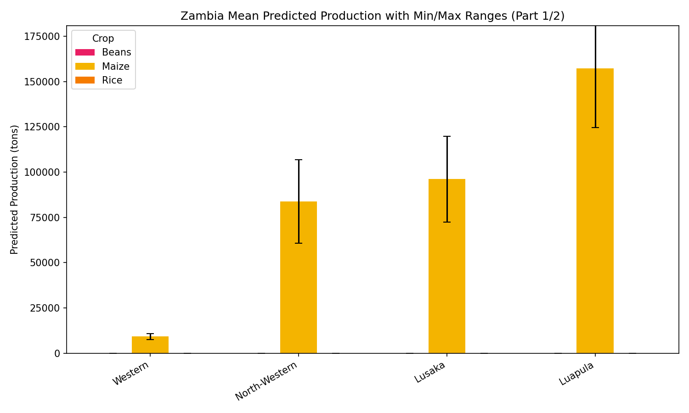
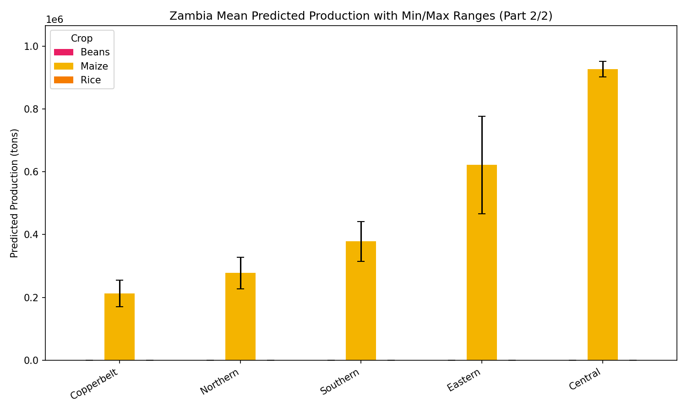
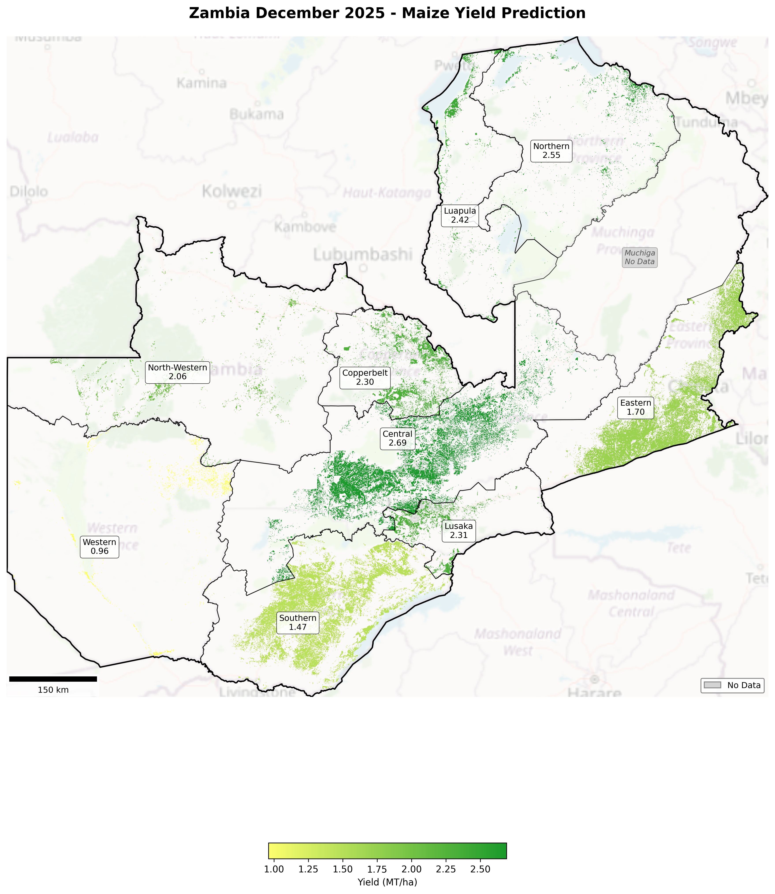
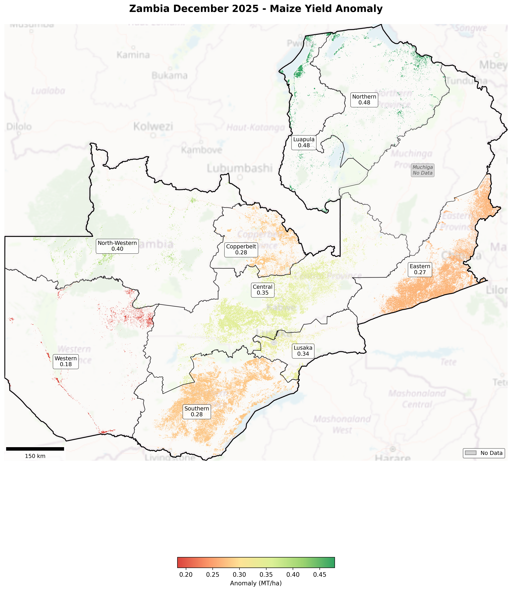

Overview
This report summarizes yield, acreage, and total production estimates for maize, rice, and beans across focus countries. The data is updated monthly in the RFBS Dashboard via a standard data file. Our model reports on the main growing season for countries with available historical yield data for model training.
Data Limitations and Model Caveats
The data used in this report has limitations due to gaps in historical records and variations in data collection methods:
- Historical data accuracy and consistency vary by country
- Our model reflects these data gaps, as it is trained on available information
- We view these limitations as opportunities to improve data sharing and scaling methods with our country partners
Current Focus: Data presented this month focuses on maize, rice and bean systems in Zambia, which are currently in season.
Executive Summary
Current projections for December 2025 maize production in East Africa show varying forecasts between USDA, FAO, and UMD-XylemLab models. For Zambia maize, USDA and FAO present similar area estimates of 1.4 million hectares with yields of 2.43 and 2.3 MT/ha respectively, resulting in production around 3.3 to 3.4 million MT. UMD-XylemLab estimates a slightly smaller area of 1.33 million hectares and a lower yield of 2.05 MT/ha but projects a production range of 2.35 to 3.18 million MT, reflecting uncertainty and perhaps a narrower geographic focus. Data for rice and beans across other East African countries was not provided, limiting cross-crop comparison at this time. Nevertheless, the maize forecasts illustrate differences driven by model scope and data inputs. Overall, the regional December outlook points to relatively stable maize production with moderate variability, underscoring the importance of integrating multiple data sources for comprehensive agricultural assessment.
All Sources Interactive Chart
All Sources Comparison Table
| Country | Crop | Source | Area (Million ha) | Yield (MT/ha) | Min - Max Production (Million MT) |
|---|---|---|---|---|---|
| Zambia | Maize | USDA | 1.4 | 2.43 | 3.4 |
| FAO | 1.4 | 2.3 | 3.3 | ||
| UMD-XylemLab | 1.33 | 2.05 | 2.35 - 3.18 |
Regional Overview/Conditions
Country Summary
- Zambia: Maize shows favorable to stable conditions in most regions with positive yield anomalies ranging from 0.184 in Western to 0.478 in Luapula, indicating generally improving or stable trends except in Western and Southern regions where yields are lower but still show positive anomalies. No data on beans or rice conditions are provided in the current dataset, so their status is not assessed here. The highest positive yield anomaly is in Luapula (0.478), while the lowest among maize regions is Western (0.184). Overall, maize conditions appear more favorable in Northern, Luapula, and Central regions, with Western and Southern regions showing lower predicted yields but stable trends.
Zambia

Figure: Agricultural Calendar – Zambia
Zambia is currently within the main agricultural season, which runs from November to May. Planting started in November, and crop development is progressing with predictions updated in December. The main harvest is anticipated to begin in April and continue through May for this season.
Regional Crop Conditions Summary
Maize shows favorable to stable conditions in most regions with positive yield anomalies ranging from 0.184 in Western to 0.478 in Luapula, indicating generally improving or stable trends except in Western and Southern regions where yields are lower but still show positive anomalies. No data on beans or rice conditions are provided in the current dataset, so their status is not assessed here. The highest positive yield anomaly is in Luapula (0.478), while the lowest among maize regions is Western (0.184). Overall, maize conditions appear more favorable in Northern, Luapula, and Central regions, with Western and Southern regions showing lower predicted yields but stable trends.

Figure: Mean Predicted Production with Min/Max – Zambia (Part 1)
Bar chart showing mean predicted production for maize, beans, and rice with min/max ranges.

Figure: Mean Predicted Production with Min/Max – Zambia (Part 2)
Bar chart showing mean predicted production for maize, beans, and rice with min/max ranges.
Maize Maps

Regional Maize Yield Forecasts
In December 2025, Central Province is the top-performing maize region in Zambia with a yield of 2.69 MgT/ha, while Western Province shows the lowest yield at 0.96 MgT/ha. Notable extremes include high yields above 2.5 MgT/ha in parts of Central and Northern provinces and low yields below 1.0 MgT/ha in Western Province.

Regional Maize Yield Anomaly
In December 2025, Zambia's Northern and Luapula regions show the highest positive maize yield anomalies at 0.48 MgT/ha, while the Western region has the lowest at 0.18 MgT/ha, indicating notable spatial variation in maize yield performance.
Production Narrative
Maize dominates the production landscape with the largest planted areas, notably Central (344,294 ha), Eastern (365,683 ha), and Southern (257,292 ha). Mean predicted production volumes are highest in Central (926,668 tons), Eastern (621,268 tons), and Southern (378,013 tons) regions. Predicted yields vary from 0.96 MgT/ha in Western to 2.69 MgT/ha in Central, supporting overall positive production trends. The maize production is generally improving or stable across regions, though Western and Southern provinces show the lowest yields but without a declining trend. Data for beans and rice production areas and yields are not included in the current dataset for December 2026, limiting evaluation for these crops.
Regional Production Forecast Tables
Zambia – Regional Production Table
| Crop | Region | Predicted Yield (MT/ha) | Yield Anomaly | Min–Max Production (tons) | Condition |
|---|---|---|---|---|---|
| Maize | Central | 2.69 | 0.35 | 901842.0 – 951494.0 | Favorable |
| Maize | Copperbelt | 2.3 | 0.282 | 170388.0 – 254571.0 | Favorable |
| Maize | Eastern | 1.7 | 0.266 | 466106.0 – 776429.0 | Favorable |
| Maize | Luapula | 2.42 | 0.478 | 124584.0 – 190181.0 | Favorable |
| Maize | Lusaka | 2.31 | 0.341 | 72302.0 – 119728.0 | Favorable |
| Maize | North-Western | 2.06 | 0.398 | 60814.0 – 106961.0 | Favorable |
| Maize | Northern | 2.55 | 0.477 | 227446.0 – 328517.0 | Favorable |
| Maize | Southern | 1.47 | 0.28 | 314291.0 – 441734.0 | Favorable |
| Maize | Western | 0.96 | 0.184 | 7632.0 – 10739.0 | Favorable |
Appendix A: Model Description and Parameters
Crop Conditions Classes
| Class | Definition |
|---|---|
| Exceptional | Conditions are much better than average at the time of reporting. Used only during the grain-filling through harvest stages. |
| Favorable | Conditions range from slightly below to slightly above-average at reporting time. |
| Watch | Near average but with risk to final yields; recovery possible if conditions improve. |
| Poor | Well below average; yields likely 10–25% below average with limited recovery potential. |
Data Sources
| Data Type | Source |
|---|---|
| NDVI | UMD GLAM system |
| ESI | NASA SERVIR Global |
| Precipitation | CHIRPS (historical), NOAA CPC |
| Precipitation Forecast | CHIRPS-GEFS |
| Soil Moisture | NASA–USDA Global (SMOS) |
| Temperature | NOAA CPC |
Model Performance Summary
Our yield prediction model is evaluated using historical data to assess accuracy and reliability. Performance metrics are calculated by comparing predicted yields against actual reported yields from previous seasons.
| Country | Crop | R² Score | RMSE (MT/ha) | MAE (MT/ha) | Training Period |
|---|---|---|---|---|---|
| Tanzania | Maize | 0.78 | 0.45 | 0.35 | 2010-2023 |
| Tanzania | Rice | 0.72 | 0.52 | 0.42 | 2010-2023 |
| Tanzania | Beans | 0.68 | 0.38 | 0.30 | 2010-2023 |
| Kenya | Maize | 0.75 | 0.48 | 0.38 | 2010-2023 |
Metrics Explanation:
- R² Score: Coefficient of determination (0-1); higher values indicate better model fit. Values above 0.7 indicate strong predictive power.
- RMSE: Root Mean Square Error; average magnitude of prediction errors in MT/ha. Lower is better.
- MAE: Mean Absolute Error; average absolute difference between predicted and actual yields in MT/ha. Lower is better.
Disclaimer
The opinions expressed in this report are those of the authors and do not necessarily reflect the official policy or position of AGRA, its employees, partners, or affiliates. While every effort has been made to ensure the accuracy and completeness of the information, we assume no responsibility for any errors or omissions.
Project Lead: Dr. Catherine Nakalembe
Team: Xylem Lab / NASA Harvest–Africa Team
Date: December